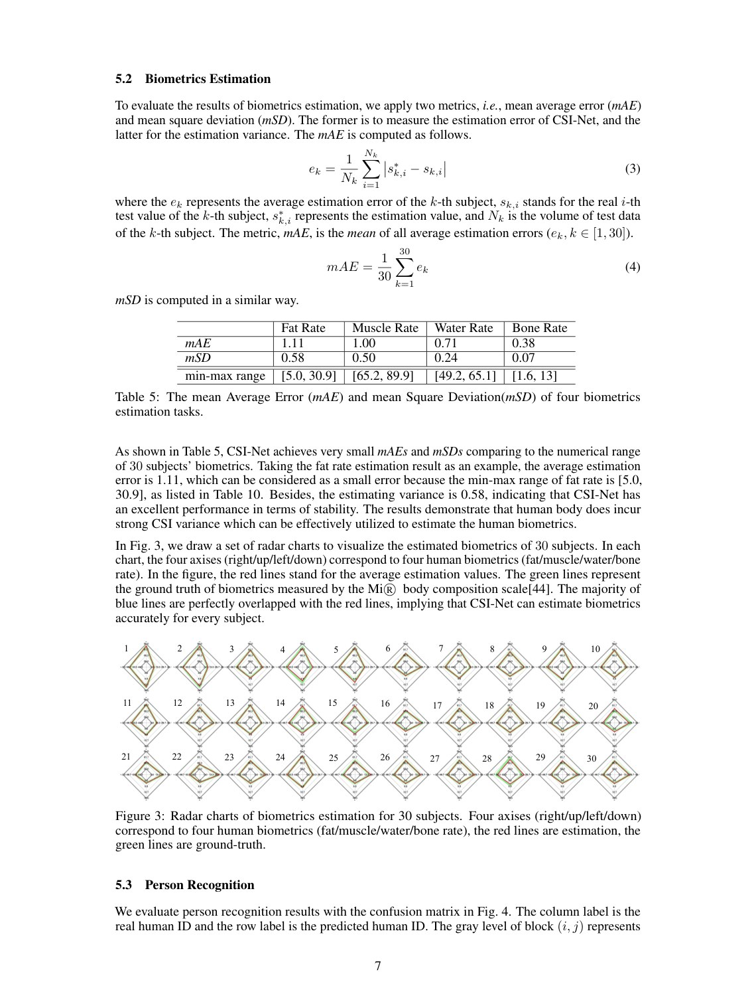
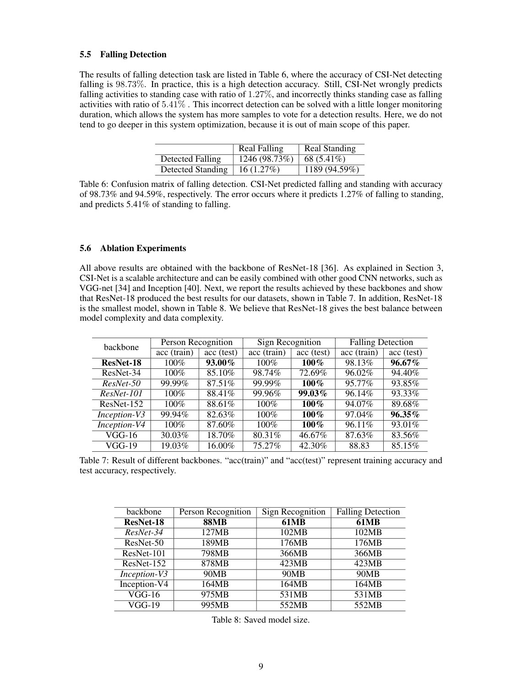

arXiv preprint arXiv:1810.03064, 2018
Publication
Csi-net: Unified human body characterization and pose recognition
F Wang, J Han, S Zhang, X He, D Huang
CSI-Net learns unified Wi-Fi CSI representations for body characterization and pose recognition, covering biometrics estimation, person recognition, hand-sign recognition, and fall detection.
Wi-Fi Human Sensing
Xi'an Jiaotong University; Carnegie Mellon University; Zhejiang University
Overview
CSI-Net explores whether one Wi-Fi representation model can support multiple human sensing tasks. Earlier CSI-based systems often relied on handcrafted features such as dynamic time warping, statistics, or task-specific preprocessing. That makes it difficult to design person-specific features for biometrics and person-invariant features for activities.
The paper proposes a unified CNN-based network for CSI representation learning. It applies the same general approach to body characterization and pose recognition tasks.
Main Contributions
- Proposes CSI-Net, a unified deep neural network for Wi-Fi CSI representation learning.
- Studies body characterization through biometrics estimation and person recognition.
- Studies pose recognition through hand-sign recognition and fall detection.
- Shows that human presence and body characteristics introduce useful CSI variation.
- Releases code through the GitHub repository noted in the paper.
Method Design
CSI-Net is built around convolutional representation learning for CSI data. Instead of manually aligning or summarizing sequences, the network learns discriminative patterns from the signal. This makes it possible to use the same feature-learning machinery for identity-related and activity-related tasks.
The paper also discusses a wireless signal model explaining why human bodies cause CSI variance and why that variance can carry useful sensing information.
Evaluation Highlights
The evaluation covers four tasks: biometrics estimation, person recognition, hand-sign recognition, and fall detection. The results show strong performance across these tasks, supporting the paper's claim that CSI-Net can serve as a unified representation learner rather than a single-task model.
Takeaways
CSI-Net is an early and broad demonstration of Wi-Fi deep representation learning. Its value lies in showing that commodity Wi-Fi signals can support both body-characteristic sensing and pose/action recognition under a shared model family.
Paper Screenshots: Method, Principle, And Results
The screenshots below are cropped from the paper PDF and are placed next to the reading notes so the page shows the actual method diagrams, principle illustrations, and result evidence rather than only prose.


Resources
{kind=link}
Citation
@inproceedings{csi-net-unified-human-body-characterization-and-pose-recognition,
title = {Csi-net: Unified human body characterization and pose recognition},
author = {F Wang and J Han and S Zhang and X He and D Huang},
booktitle = {arXiv preprint arXiv:1810.03064, 2018},
year = {2018}
}